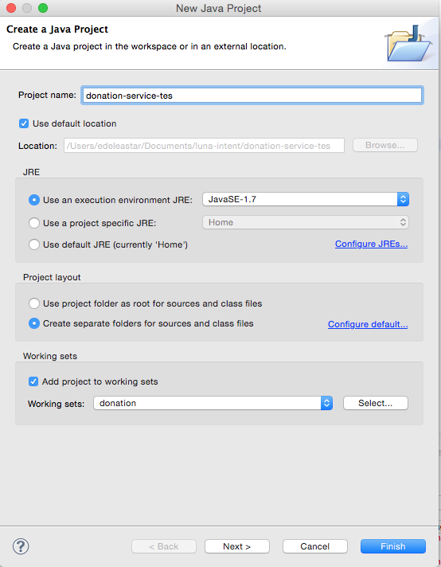
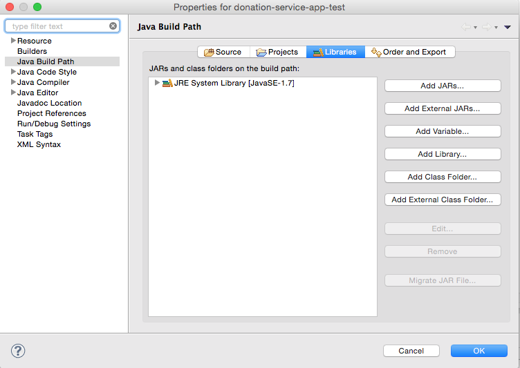
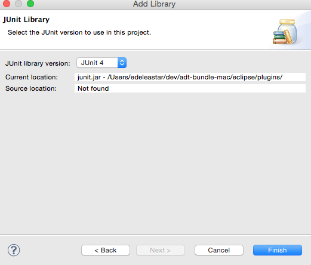
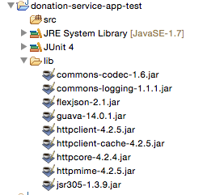
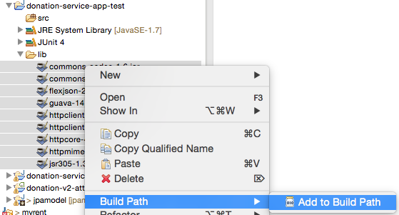
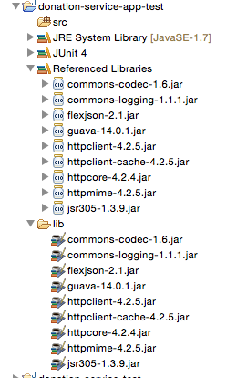
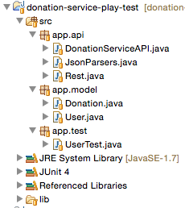
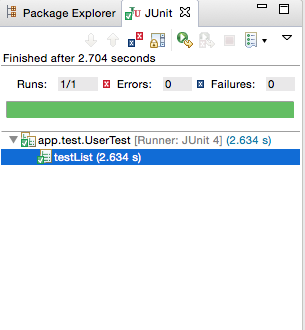
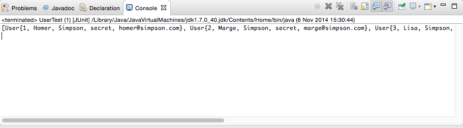

Create a new standard java project specifically to test the API we have developed in donation-service-play project.
Create a new Java Project in eclipse - this time neither a play nor an Android app, just a simple Java Application. Call the Project donation-service-play-test"

In the new project, select the project in Eclipse Package Explorer, right click, and select "Build Path->Configure Build Path"

Under libraries, select "Add Library" and in subsequent select JUnit 4:

This adds the JUnit library capability to our project.
Now download this archive here:
Expand the archive and drag/drop the folder into your project. It should now look like this:

Select all of the imported jar files, right-click, and select 'Build Path->Add to Build Path'

The project should now be configured thus:

In donation-service-test, create a new package called 'app.models'. Incorporate the following two classes into this package:
package app.model;
import com.google.common.base.Objects;
import static com.google.common.base.Objects.toStringHelper;
public class User
{
public Long id;
public String firstName;
public String lastName;
public String email;
public String password;
public User()
{}
public User(String firstName, String lastName, String email, String password)
{
this.firstName = firstName;
this.lastName = lastName;
this.email = email;
this.password = password;
}
@Override
public boolean equals(final Object obj)
{
if (obj instanceof User)
{
final User other = (User) obj;
return Objects.equal(firstName, other.firstName)
&& Objects.equal(lastName, other.lastName)
&& Objects.equal(email, other.email)
&& Objects.equal(password, other.password);
}
else
{
return false;
}
}
@Override
public String toString()
{
return toStringHelper(this).addValue(id)
.addValue(firstName)
.addValue(lastName)
.addValue(password)
.addValue(email)
.toString();
}
}
package app.model;
import static com.google.common.base.Objects.toStringHelper;
import com.google.common.base.Objects;
public class Donation
{
public Long id;
public int amount;
public String method;
public Donation()
{}
public Donation (int amount, String method)
{
this.amount = amount;
this.method = method;
}
public String toString()
{
return toStringHelper(this).addValue(id)
.addValue(amount)
.addValue(method)
.toString();
}
@Override
public boolean equals(final Object obj)
{
if (obj instanceof Donation)
{
final Donation other = (Donation) obj;
return Objects.equal(amount , other.amount)
&& Objects.equal(method, other.method);
}
else
{
return false;
}
}
}
In donation-service-test, create a new package called 'app.api'. Incorporate the following three classes into this package:
Note: we will explore the structure of these classes in the lectures.
package app.api;
import org.apache.http.HttpResponse;
import org.apache.http.client.methods.HttpDelete;
import org.apache.http.client.methods.HttpGet;
import org.apache.http.client.methods.HttpPost;
import org.apache.http.client.methods.HttpPut;
import org.apache.http.entity.StringEntity;
import org.apache.http.impl.client.BasicResponseHandler;
import org.apache.http.impl.client.DefaultHttpClient;
import org.apache.http.params.BasicHttpParams;
import org.apache.http.params.HttpConnectionParams;
import org.apache.http.params.HttpParams;
public class Rest
{
private static DefaultHttpClient httpClient = null;
private static final String URL = "http://localhost:9000";
private static DefaultHttpClient httpClient()
{
if (httpClient == null)
{
HttpParams httpParameters = new BasicHttpParams();
HttpConnectionParams.setConnectionTimeout(httpParameters, 10000);
HttpConnectionParams.setSoTimeout(httpParameters, 10000);
httpClient = new DefaultHttpClient(httpParameters);
}
return httpClient;
}
public static String get(String path) throws Exception
{
HttpGet getRequest = new HttpGet(URL + path);
getRequest.setHeader("accept", "application/json");
HttpResponse response = httpClient().execute(getRequest);
return new BasicResponseHandler().handleResponse(response);
}
public static String delete(String path) throws Exception
{
HttpDelete deleteRequest = new HttpDelete(URL + path);
HttpResponse response = httpClient().execute(deleteRequest);
return new BasicResponseHandler().handleResponse(response);
}
public static String put(String path, String json) throws Exception
{
HttpPut putRequest = new HttpPut(URL + path);
putRequest.setHeader("Content-type", "application/json");
putRequest.setHeader("accept", "application/json");
StringEntity s = new StringEntity(json);
s.setContentEncoding("UTF-8");
s.setContentType("application/json");
putRequest.setEntity(s);
HttpResponse response = httpClient().execute(putRequest);
return new BasicResponseHandler().handleResponse(response);
}
public static String post(String path, String json) throws Exception
{
HttpPost putRequest = new HttpPost(URL + path);
putRequest.setHeader("Content-type", "application/json");
putRequest.setHeader("accept", "application/json");
StringEntity s = new StringEntity(json);
s.setContentEncoding("UTF-8");
s.setContentType("application/json");
putRequest.setEntity(s);
HttpResponse response = httpClient().execute(putRequest);
return new BasicResponseHandler().handleResponse(response);
}
}
package app.api;
import java.util.List;
import java.util.ArrayList;
import app.model.Donation;
import app.model.User;
import flexjson.JSONDeserializer;
import flexjson.JSONSerializer;
public class JsonParsers
{
public static JSONSerializer userSerializer = new JSONSerializer().exclude("class")
.exclude("persistent")
.exclude("entityId");
public static JSONSerializer donationSerializer = new JSONSerializer().exclude("class")
.exclude("persistent")
.exclude("entityId");
public static User json2User(String json)
{
return new JSONDeserializer<User>().deserialize(json, User.class);
}
public static List<User> json2Users(String json)
{
return new JSONDeserializer<ArrayList<User>>().use("values", User.class)
.deserialize(json);
}
public static String user2Json(Object obj)
{
return userSerializer.serialize(obj);
}
public static List<User> users2Json(String json)
{
return new JSONDeserializer<ArrayList<User>>().use("values", User.class)
.deserialize(json);
}
public static Donation json2Donation(String json)
{
return new JSONDeserializer<Donation>().deserialize(json, Donation.class);
}
public static String donation2Json(Object obj)
{
return donationSerializer.serialize(obj);
}
public static List<Donation> json2Donations(String json)
{
return new JSONDeserializer<ArrayList<Donation>>().use("values", Donation.class)
.deserialize(json);
}
}
package app.api;
import java.util.List;
import app.model.Donation;
import app.model.User;
public class DonationServiceAPI
{
public static List<User> getUsers() throws Exception
{
String response = Rest.get("/api/users");
List<User> userList = JsonParsers.json2Users(response);
return userList;
}
public static User getUser(Long id) throws Exception
{
String response = Rest.get("/api/users/" + id);
User user = JsonParsers.json2User(response);
return user;
}
public static User createUser(User user) throws Exception
{
String response = Rest.post ("/api/users", JsonParsers.user2Json(user));
return JsonParsers.json2User(response);
}
public static void deleteUser(User user) throws Exception
{
Rest.delete ("/api/users/" + user.id);
}
}
Create another folder called 'app.test', and incorporate this class:
package app.test;
import java.util.List;
import org.junit.Test;
import app.api.DonationServiceAPI;
import app.model.User;
public class UserTest
{
@Test
public void testList() throws Exception
{
List<User> list = DonationServiceAPI.getUsers();
System.out.println(list);
}
}
Your project should now look like this:

The class we have just introduced is a simple unit test.
Make sue the donation-service-play app is running, and run the above test. To run the test, right click on the UserTest class and select 'Run as->JUnit Test'
After perhaps a slight delay if this is the first time you have launched the app, you should see the test runner 'green bar':

And the console window might contain the users retrieved by the api call:

Think carefully about what we have just done.
Exploring DonationServiceAPI, we can see there are several methods in here that may be useful:
public class DonationServiceAPI
{
public static List<User> getUsers() throws Exception
{
//...
}
public static User getUser(Long id) throws Exception
{
//...
}
public static User createUser(User user) throws Exception
{
//...
}
public static void deleteUser(User user) throws Exception
{
//...
}
We can use these to compose some tests:
package app.test;
import static org.junit.Assert.*;
import java.util.List;
import org.junit.Test;
import app.api.DonationServiceAPI;
import app.model.User;
public class UserTest
{
@Test
public void testCreate() throws Exception
{
User john = new User("john", "doe", "john@doe.com", "secret");
User user = DonationServiceAPI.createUser(john);
assertEquals(john, user);
}
@Test
public void testGet() throws Exception
{
User homer = new User("Homer", "Simpson", "homer@simpson.com", "secret");
User searchUser = DonationServiceAPI.getUser(1l);
assertEquals(homer, searchUser);
}
}
Run this test - we would expect it to pass. Explore the API directly (or via postman)
You should be able to see a new user created by the tests. You will also perhaps see duplicates if you run the test a few times.
In the play app, comment our or delete the Bootstrap task that loads the yaml data. We would like the application to start with a blank database (otherwise the tests will be hard to manage)
In our UserTest class, put some fixtures in the class we will use to exercise the API:
public class UserTest
{
static User userArray [] =
{
new User ("homer", "simpson", "homer@simpson.com", "secret"),
new User ("lisa", "simpson", "lisa@simpson.com", "secret"),
new User ("maggie", "simpson", "maggie@simpson.com", "secret"),
new User ("bart", "simpson", "bart@simpson.com", "secret"),
new User ("marge", "simpson", "marge@simpson.com", "secret"),
};
List <User> userList = new ArrayList<>();
The introduce setup/teardown methods which will populate/depopulate the service using the above fixture
@Before
public void setup() throws Exception
{
for (User user : userArray)
{
User returned = DonationServiceAPI.createUser(user);
userList.add(returned);
}
}
@After
public void teardown() throws Exception
{
for (User user : userList)
{
DonationServiceAPI.deleteUser(user);
}
}
Finally, bring in these unit tests:
@Test
public void testCreate () throws Exception
{
assertEquals (userArray.length, userList.size());
for (int i=0; i<userArray.length; i++)
{
assertEquals(userList.get(i), userArray[i]);
}
}
@Test
public void testList() throws Exception
{
List<User> list = DonationServiceAPI.getUsers();
assertTrue (list.containsAll(userList));
}
@Test
public void testDelete () throws Exception
{
List<User> list1 = DonationServiceAPI.getUsers();
User testUser = new User("mark", "simpson", "marge@simpson.com", "secret");
User returnedUser = DonationServiceAPI.createUser(testUser);
List<User> list2 = DonationServiceAPI.getUsers();
assertEquals (list1.size()+1, list2.size());
DonationServiceAPI.deleteUser(returnedUser);
List<User> list3 = DonationServiceAPI.getUsers();
assertEquals (list1.size(), list3.size());
}
Theses tests should all pass.
Examine closely the last test.
Archive of the two projects so far:
Consider writing some more User tests. Look back at last weeks lab for inspiration of one or two more useful tests you might compose.
Look carefully at the UserTest and also the methods in DonationServiceAPI.
Now consider how you might extent the DonationServiceAPI class to allow access to donations as well as users. The code changes are entirely restricted to the DonationServiceAPI class, there will be no need to change the play project.
Now, build a new rest class - DonationTest - to exercises the api. Use UserTest as a role model for writing these tests.